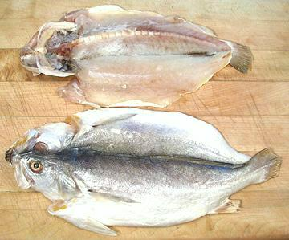
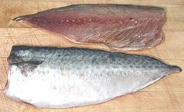

Asian Moist Salted Fish

Salt fish is very popular throughout Southeast and East Asia to add
flavor to various dishes, often stir fries or soups. Salted fish is
moist, not dried, and must be kept refrigerated or frozen.
The photo specimens were purchased from a bulk bin at a local Korean
market and show the traditional form. They were 11 inches long and weighed
a shade over 1/2 pound each. More commonly you will find salt fish
(especially mackerel) in the freezer cases, neatly packaged in plastic -
without head fins or tail.
More on Fish - Dried, Salted & Smoked

Buying:
Salted fish is easiest to find in Korean markets
in the freezer cases, but should also be found in Japanese, Chinese and
Southeast Asian markets. The traditional form shown above is now rare. It's
generally put up as fillets in flat plastic envelopes, without head, tail,
or backbone - but usually with the skin on. Mackerel (easily identified by
its blue color and broad stripes) is most common.
Storing:
Salt fish can be kept refrigerated for a
week or so, but for longer storage it should be frozen. In a home freezer
compartment it should be kept in the back farthest from the door and
should not be kept more than a few months. Because of the salt it is
never completely frozen and temperature fluctuations cause alternate
melting and freezing, which may eventually result in rancidity.
Cooking:
Unlike fully dried salt fish, this form has much
less salt and may be rinsed before using but is never soaked for long. Salt
fish is often used in stir fries, particularly ones that are predominantly
vegetable and need a bit of a flavor contrast. It is usually fried in the
oil until lightly browned, then removed and set aside while the other
ingredients are fried, and added back in the last minutes.
sf_fshsaltz 090704 - www.clovegarden.com
©Andrew Grygus - agryg@clovegarden.com - Photos on this
page not otherwise credited are © cg1 -
Linking to and non-commercial use of this page permitted